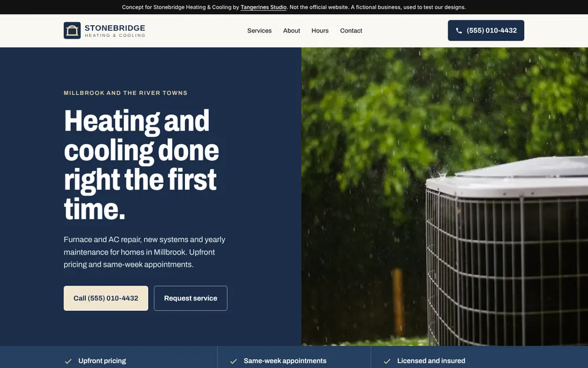
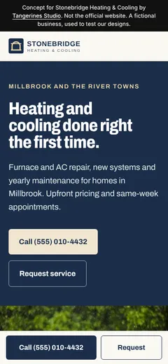
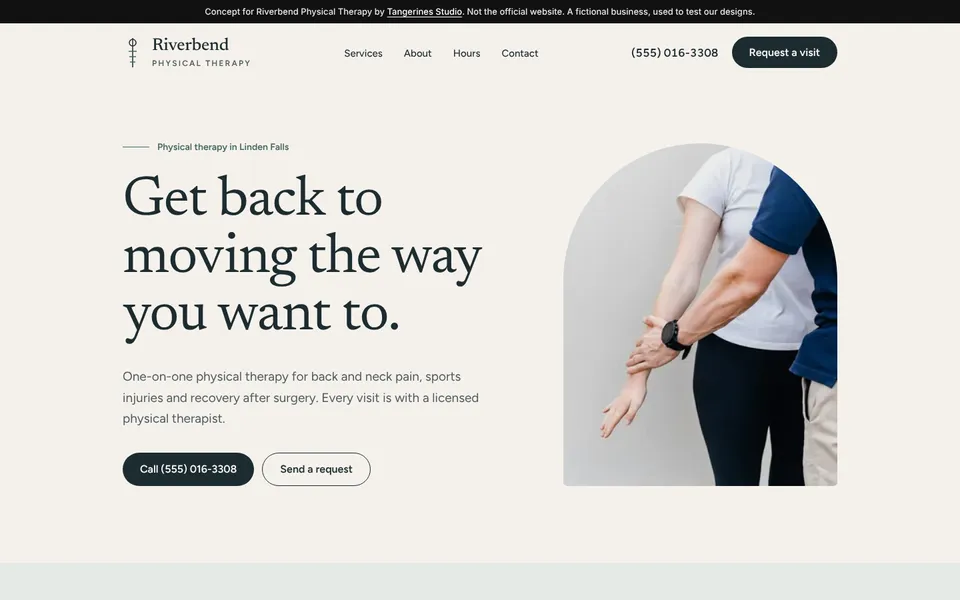
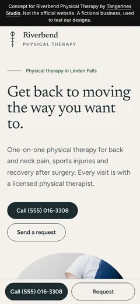
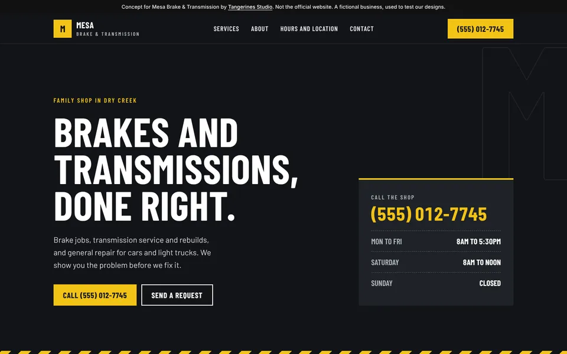
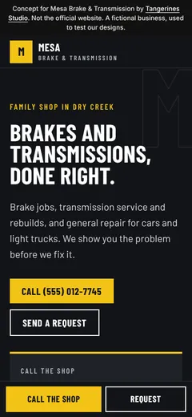
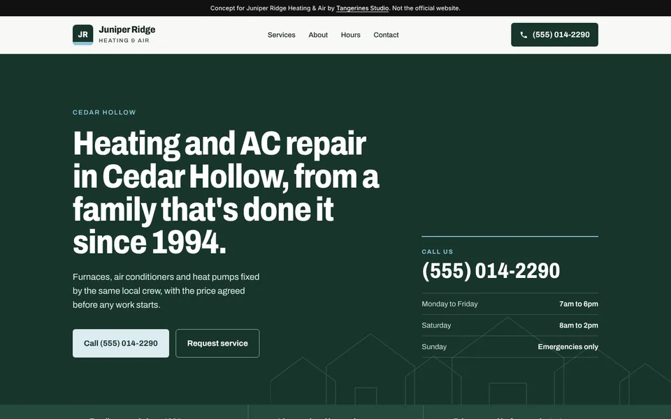
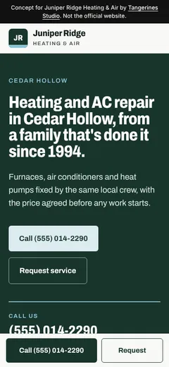

For review
The free homepage, in three trade themes.
Every preview a prospect receives now starts from one of these themes, built from the same design as our sample sites. Each one has a photo layout and a type-led layout for businesses without usable photos, and sets the business name as a wordmark when there is no usable logo. The three businesses below are fictional test cases; real previews use only the business's own facts, logo and photos.


01 · Home services theme
Stonebridge Heating & Cooling
The home theme with a logo, a hero photo and an about photo, recolored to the business's own navy and sand.
- Photo hero split with the headline, promise strip from their own facts
- Numbered services ledger that works for 3 to 12 services
- Hours table, towns in large type, call bar on phones


02 · Wellness theme
Riverbend Physical Therapy
The wellness theme with photos and no logo, so the name is set as a serif wordmark with the thin vertical line.
- Arched hero photo, calm serif headings, lots of air
- Services as a quiet two-column list
- Hours and a find-us block with a maps link, no third-party map


03 · Auto repair theme
Mesa Brake & Transmission
The auto theme with no logo and no photo: the type-led layout, built for shops whose own site has nothing usable.
- Big condensed headline, the phone and hours on a shop ticket
- Services as a numbered board, hours as a shop sign
- Vehicle field in the request form


04 · Re-rendered sample
Juniper Ridge Heating & Air
The existing sample spec, rendered by the new engine with no changes to the spec. No logo and no photo, so it uses the type-led home layout. This one is already at its live path.
Open the previewHow preview jobs use this
Engine first, then a hand pass for the business.
- Write the spec from their own pages, pick the theme, and set
palettefrom their logo colors when they have a clear brand color. - Render with
engine/render_concept.py. Logos, photos and fonts land in the preview's own folder. - Refine for the business: wording, order and kicker in the spec; anything visual in a
refine.cssbeside the page, which every re-render keeps. - Run
engine/check_preview.py, look at both screenshots, fix, and publish.